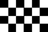
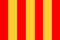

De: La Frikipedia, la enciclopedia extremadamente seria.
De: La Frikipedia, la enciclopedia extremadamente seria. De: La Frikipedia, la enciclopedia extremadamente seria.

«¡Milagro!¡Milagro! Gracias a aquesta guía, ya no volveré a estrellarme en la última vuelta... ¿o sí?»
~ Kimi Räikkönen , momentos después de leerse este manual, abrazándose a su bocata de calamares de la suerte
Este cursillo nos enseñará, por ejemplo, a como adelantar al Kimi Raikoñen ése,(fácil) o a como hacer palomitas en el coche, así como ser odiado por los de la MAFIA.
Este curso se divide en muchas partes donde podremos comprobar lo extremadamente jodío chungo que es pilotar una máquina de estas frikis.
Te advertimos que para conseguir tu Súper Licencia, deberás ser un enchufado como Sébastien Buemi o Lewis Hamilton examinarte ante los conos, y la verdad es que son muy malooos.
Lo primero que debemos aprender es como trazar una curva, por lo que nos hemos molestado en poneros unas imágenes de diferentes tipos de trazadas (en rojo), según el tipo de piloto que quieras ser.
Cada piloto tiene su forma de comerse trazar una curva, pero como me tengo que ir a cenar, no me voy a molestar más que poniendo cuatro ejemplos claramente definidos:
Este es el que usan los pilotos que saben de qué va el tema y que controlan algo el monoplaza. Se basa en no salirse del asfalto y aún así no perder mucho tiempo.
Al ser demasiado poco sofisticado, hoy en día no lo usa ni Diox.
Es el que usa Luisito y es sospechosamente igual al primero, que sería el de Frenando Alonso. Esto, ante los ojos de Diox no es más que una mera casualidad, ante los ojos de la FIA, también.
Consiste en confundirse aposta sin querer el freno con el acelerador.
El resultado es que cuando te das cuenta de que te has pasao la curva y que te va a parar la Guardia Civil, rezas un Ave María y te chocas contra la barrera arrollando a cuantos espectadores puedas.
Farruquito se inspiró en Kimi para calcarle su modelo de conducción por las calles de Aspaña.
Este es el más astuto y simple. Consiste en comerte la curva por donde te de la gana intentando estar todo el rato corriendo en una recta. Como esto no es del todo posible, ya que no darías vueltas al circuito, puedes dedicarte a recortar la trazada del circuito a un “0”.
La entrada a boxes es uno de los momentos más fáciles de una carrera porque es cuando más lento se va, aunque hay pilotos que forman la excepción y que su inexperiencia les pasa factura. He aquí un ejemplo bien ilustrativo de como meterse en boxes según Luisito:
Las banderitas son un elemento muy importante que se tienen que saber los pilotos pa' que no les den los de la MAFIA.
| "Vandera" | ¿Qué carajo es esto? |
|---|---|
|  | Bandera a cuadros: Señala que está prohibido jugar al ajedrez en pista. |
| Bandera roja: Indica que ha habido un accidente mu gordo y que puede haber mucha sangre en el asfalto. Hay que tener precaución con este líquido que puede ser resbaladizo. | |
| Bandera amarilla: Advierte que hay muchos chinos mirando en las gradas y que tengas cuidao por si se sale uno pa' la pista, no sea que lo pilles que son muy pequeñitos y se camuflan muy bien. | |
|  | Bandera a rayas: Cuando sale esta bandera significa que el piloto debe abandonar inmediatamente la carrera por catalán y por hacer apología de Carod y querer la desmembración del Estado Aspañol. |
| Bandera verde: Es la bandera que te saca el Títo Dennis desde el pit-lane para avisarte de que has hecho mal porque no has dejao que te pasase Hamilton y que te va a poner verde en los boxes cuando termines. | |
| Bandera azul: Te la suelen sacar para avisarte de que vas mas lento que un carrito de los helaos y que deberías meter carbón a la bodega o dejar pasar al pobre mártir que está detrás de ti. | |
| Bandera partida: Significa que debes abandonar la carrera por racista. | |
| Bandera negra: Indica que tienes a Hamiltonto delante. | |
| Bandera blanca: Indica que a habio un accidente mu gordo y sa' muerto un piloto. | |
| Bandera negra con círculo: Te la sacan cuando tienes el coche que está que da pena ya que eres un inútil y te la has pegao contra la grada y que deberías |
Ver Reglamento Oficial de la Fórmula 1 de Hamilton
Las sanciones que te impondrán injustamente tras una votación con previo debate, los de la MA-FIA serán las siguientes:
| Acto contra Luisito | San Ción |
|---|---|
| Comentar que te cae mal | Tus neumáticos se deshinchan en la última vuelta cuando vas primero |
| Mirarle feo | Tu motor se rompe accidentalmente y te retrasan 10 posiciones por repararlo |
| Hablar mal de él | 10 puntos menos |
| Llamarle morenito o conguito | Misteriosamente te quedas sin frenos en carrera |
| Hacer que espere un poco en boxes | Te quitan la pole |
| Sabotearle el coche | Te dejas casualmente la plancha encendida y se te quema la casa |
| Ir por delante de él | Veneno en el desayuno |
| Estorbarle | Veneno en la comida |
| Sacarle de pista | Veneno y matarratas en la cena |
Los puntos sirven pa estar arriba de la tabla y poder presumir de ser el que más trampas haces.
| Posición | Puntos | Premio |
|---|---|---|
| 1º | 25 | Un finde con ésta |
| 2º | 18 | Una piruleta amarga |
| 3º | 15 | Un Lego |
| 4º | 12 | Una rata muerta |
| 5º | 10 | Un móvil sin saldo |
| 6º | 8 | Una gameboy en blanco y negro |
| 7º | 6 | Un consolador |
| 8º | 4 | Un diente partido |
| 9º | 2 | Un botón descosido |
| 10º | 1 | Un truño |
Nota: Si eres Luisito, en todas las carreras obtendrás 26 puntos.
Mas conocida como "regufo" o incluso "retufo", esa expresión no significa que te vayas a ir a tomar por culo o que te vayas a dejarte los piños contra el muro de seguridad.
No. Significa que tienes la capacidad aerodinámica suficiente ya que aprovechas el viento del monoplaza de delante que tu coche lleva tanto aire que parece un ventilador y que puedes aprovechar para aumentar tu velocidad ir a saco y dejar tumbao al que estaba delante.
Este efecto sólo se puede producir en una recta porque lo digo yo, cohones porque en las curvas no vas lo suficientemente rápido.
Para ser un buen piloto es importante conocer a fondo tu coche, y todo lo que lo compone. Créeme, todas las partes son importantes para correr, y es esencial terminar de una pieza para poder ganar (Que se lo digan a Räikkönen...).
Una parte fundamental del rendimiento de un coche son los neumaticos. En un coche de F1 es muy importante saber que lo más normal es que "haiga" 3 ya que son tan malos los Piedradelpuente (Bridgestone) que se suelen petar muy fácilmente en carrera (aunque son mejores que los Michelin, que estaban llenos de grasa y se retiraron). Está comprobado que 5 de cada 2 pilotos no termina con los cuatro.
Principalmente estan compuestos de gomaespuma, de paja y de aire (fundamental), lo que les hace muy resistentes y fiables. Es importante también que conserves las tres partes unidas en todo momento, no vayas a acabar en la puzolana como el pringao de Hamiltonto y no puedas salir...
Hay varios tipos: los de seco, los intermedios y los de mojado. Los de seco pueden ser blandos o duros, y dependiendo de la distancia para la cual vayas a usarlos, tendrás que elegir cual va mejor. Debido a la falta de previsión y poca puntería con el tiempo, éstos se suelen utilizar malamente, resultando ser los de lluvia pa cuando hace sol y los de seco pa cuando se te inunda la pista y el piloto tiene que achicar hagua de dentro del habitáculo, mientras se la pela conduce.
En cuanto a los blandos y los duros... la diferencia es que resulta más agradable ser atropellado por unos blandos que por los que están como una puta piedra, por lo que los primeros nunca los usan los pilotos, ya que son todos unos seres sin compasión atropella-ardillas y sanguinarios habitantes del lado oscuro de la fuerza.
El volante de un fórmula 1 es un objeto sin importancia porque como todo el mundo sabe, este deporte es una farsa y lo controlan todo por ordenador.
No obstante, uno de esto puede ser muy útil para otras muchas tareas o para entretenerse jugando como parvulitos mirando los botones de colores, entre los cuales destacan, en la leyenda esta de la foto:
El resto de botones son para copiarle la telemetría a Frenando Afondo.
Introducido en 2009, el KERS es uno de los novedosos elementos de la F1, que es importante que todo buen piloto conozca.
El KERS es un artilugio que te da 6 tristes segundos de potencia extra por vuelta, lo que viene a ser una especia de Nitro Boost Power para los coches, que principalmente se usa a la hora de adelantar a otro piloto. El botón del KERS va en el volante, así que si quieres humillar al rival aumentar la potencia para adelantar a alguien, sólo tienes que pulsarlo y rezar a San Ganchao para que funcione acelerar a fondo para tratar de ganar la posición.
Actualmente, este artilugio permanece en pruebas, ya que muchas escuderías lo consideran más inestable que un bote de Uranio enriquecido, pero siempre está bien conocer los botones de tu volante a fondo, para que no te pase como a los pilotos de McCaguen.
Hasta la temporada 2009, los difusores eran un elemento aerodinámico de los coches de F1, sin demasiada importancia, pero con este aluvión de chanchullos y trampas ingeniosos diseños por parte de los mejores diseñadores de los equipos Brawas GP, Poyota o Güilliams. Para un piloto no son especialmente relevantes, ya que de eso se encargan los ingenieros y demas creadores de monoplazas, pero te pueden servir para excusarte de tu penosa desafortunada carrera del otro día con la prensa, argumento que ya estan empezando a utilizar algunos pilotos, como Puzolanito.
En 2011, despues de prohibir el conducto F y despues de que los mandamases, vease Calimero y algun que otro payo más lloraran y dijeran que no habia adelantamientos, se rompieron la cabeza e inventaron el DRS, que viene a significar "Drag Reduction System" ... Bueno, para los desenteraos, un "parato" que hace que el alerón trasero se mueva y el coche corra más. ¿Y como furula? Fácil. La FIA pone una zona de detección y una zona de activación, para que nos entendamos, la DGT pone un radar que te caza la distancia con la que estas del coche de delante, y si mantienes la distancia de seguridad (1 segundo) pues puedes darle al botoncito a partir de la zona de activación y darle cera al que llevas delante. Este "parato" se desactiva cuando pisas el freno, o dandole al botoncico de nuevo.
Autor(es):